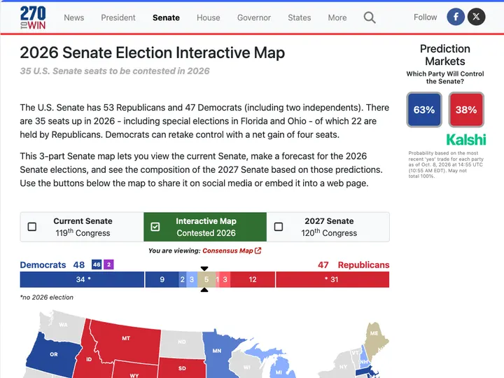
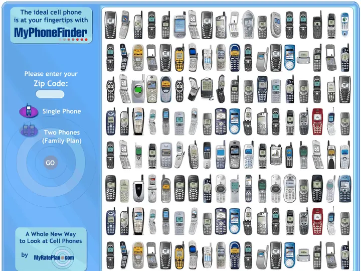
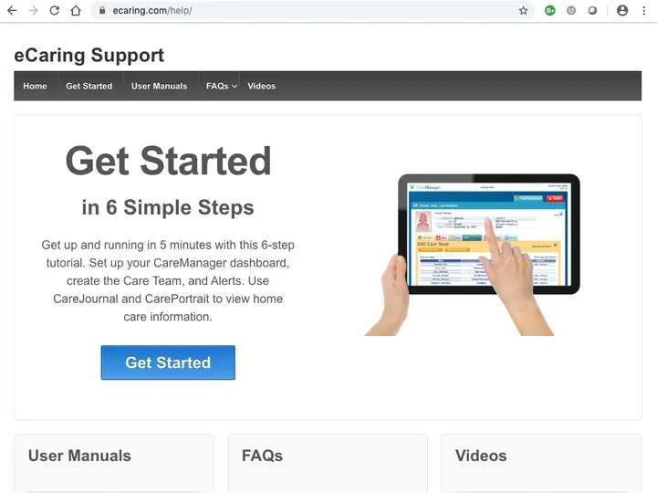
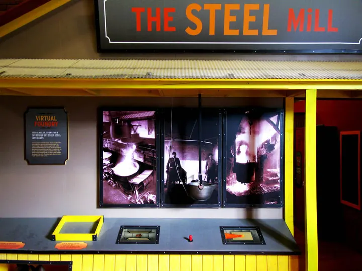
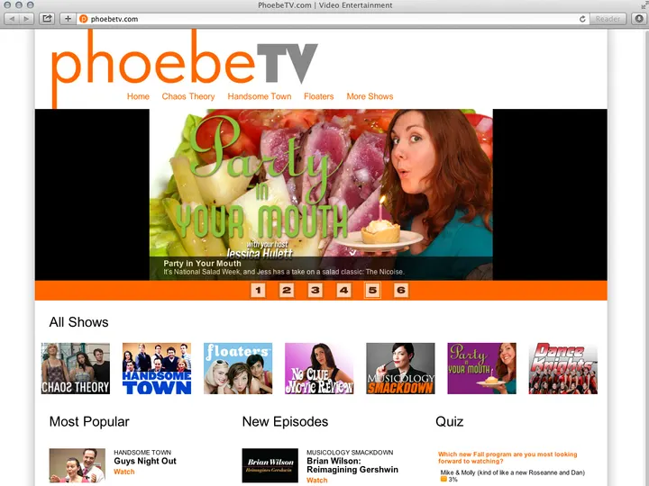
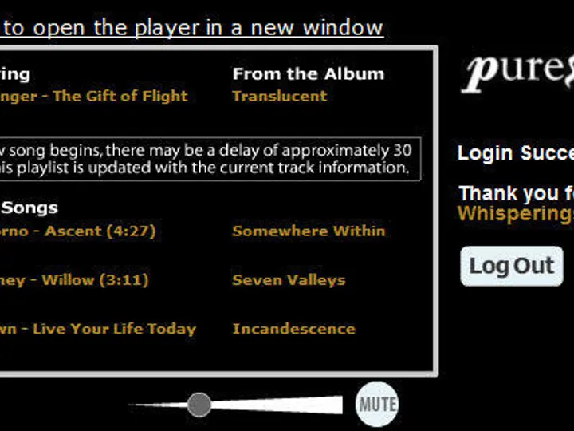
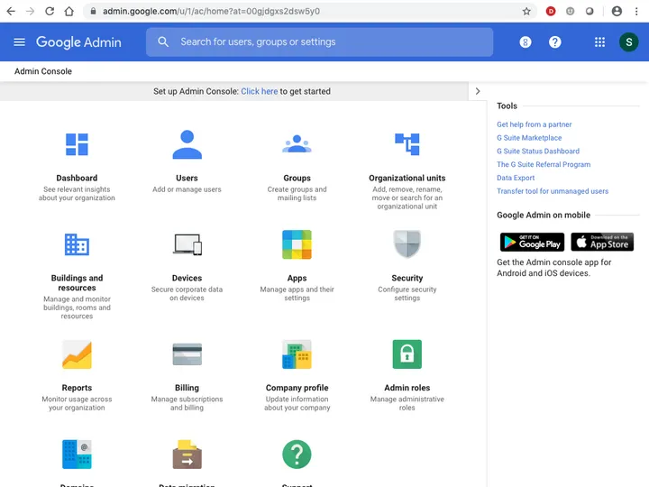

Fixed-scope builds
A new website, web app or exhibit with an agreed scope, timeline and price. Ideal when you know what you need.
- Discovery & written proposal
- Weekly progress on staging
- Launch, training & post-launch support
We take projects from first conversation to long-term care. Bring us a blank page, a half-finished build or a system that needs rescuing.
When your product is the data, the interface has to make it make sense. We build interactive maps, dashboards, calculators and tools that stay fast with live feeds and large datasets.


Marketing sites, publications and help centers that load fast, rank well and are a pleasure for your team to update.


Software for the physical world. We partner with exhibit designers and fabricators to deliver interactives that survive thousands of visitors a day.

Video sites, streaming players, rich-media ads and games that hold attention and drive action.


Launch is the beginning. We keep sites secure, current and measurable, and look after the business tools around them.

Choose the model that fits. Every engagement starts with a free discovery call and a written estimate.
A new website, web app or exhibit with an agreed scope, timeline and price. Ideal when you know what you need.
A monthly block of design and development time for teams that are always improving — like our long-running election-season work.
Design firms and exhibit builders bring us in as their development team. We fit your process and stay behind the curtain.
It depends on scope, content and integrations. After a short discovery call we send a written estimate with options, so you can choose what fits your budget. No surprises later.
A focused marketing site often takes 6–10 weeks from kickoff to launch. Web applications and exhibits vary more; we’ll give you a realistic timeline up front and show progress weekly.
Yes. We build on content management systems like WordPress with custom blocks and fields tailored to your content, and we train your team before launch.
Absolutely. We regularly inherit projects. We start with a short audit, fix what’s urgent, then plan improvements together.
Most of our clients are elsewhere — from New York to Houston. We work remotely with regular video check-ins, and travel for exhibit installs when needed.
You do. Once the project is paid, the code, designs and content are yours, and we document everything so any developer can pick it up.
That’s what the first call is for. Tell us the problem; we’ll suggest the simplest thing that solves it.